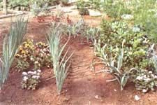
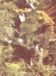

With little more than seeds and a sketchbook, you can start dabbling in artful gardening.
cabbage, Rosa d' Amerique lettuce and soon-to-bloom calliopsis.
AREN'T THOSE KIDS' PAINT with-water books great? I used to think they were magic. I was so in love with them that I'd deliberately pester my grandmother until she'd pull one out to quiet me. Then I'd sit at the kitchen table with a cup of water and a little brush and " paint" for hours. It was always so exciting to see the little dried dots in the pictures explode into rich primary hues at the touch of my wet brush.
Seeds are like that: little dry dots that explode with color. (just add water!) And seed can be found to produce almost any hue imaginable, making us free to sow bold paths of color off the tips of our fingers with the sweep of an arm.
The gardener using plants as pigments can control shapes and textures as well: sinuous pea tendril, delicate corn silk, puckered spinach green and smooth radicchio. All you have to do to take advantage of this full palette of color and design is look for attractive ways to combine different plants--vegetables, flowers and herbs-in your garden.
Furthermore, artful gardening is not only colorful but three-dimensional, aromatic and practical. Practical? Obviously, you'll produce edible, as well as attractive, results (no "starving artists" here). But there's more to it than that. By intermingling vegetables, or vegetables with flowers and herbs, you encourage beneficial insects and confuse the homing-in devices of harmful ones.
If you place plants with similar cultural requirements together, tending them becomes easier too. For instance, the bright fruits of graceful pepper plants look even better when set off by a low border of silver-fronded-gazanias--and both will last all season under semidry conditions. Heavy nitrogen feeders like lettuce and cabbage are well suited to sharing the same spot. And combining two crops that usually require botanical sprays will not only consolidate your work but also limit any drift damage to beneficial insects.
Your living garden arrangements can benefit from other functional considerations, as well. For example, calliopsis appreciates the support offered by the sturdy, open stems and leaves of squash and melons. Summer lettuce prospers in the dappled shade cast by chili peppers or dill. A ground cover of borage or basil can help keep tomato roots moist. And thyme or hyssop planted among cabbages or other brassicas repels the white cabbage butterfly.
"But," you moan, "I can't sit down in spring with only a boxful of seed packets and imagine which plants would look nice next to one another, let alone judge which are compatible."
To tell the truth, I can't either. That's where an overturned bucket and a small notebook come in handy. Once every couple of weeks during the growing season, I sit on that bucket, pad in hand, and look at what's around me. I note the date, jot down what does and doesn't look good, make educated guesses, then rough-sketch and label groupings of plants that may make things more attractive next year. It takes only about 30 minutes, and it's a lot more fun than weeding!
When spring comes around again, the past season's ramblings and sketches supply inspiration for arrangements of the new year's vegetables, herbs and flowers into groupings that will be more attractive and make better use of space, labor and supplies. New combinations suggested by books and friends can also be tried out on an experimental basis.
The practical aspects of dabbling in the art of gardening are real, but, if the truth were known, I'd probably have to admit that I'm basically still enchanted by the paint-with-water concept.
"As gardeners, we're in the business of repackaging water-into peppers, into tomatoes, into flowers," says Ian Robertson, a local organic grower and instructor.
Ah, well, that explains everything. Somewhere along the line I just put down my paintbrush and picked up a hoe.
|
 |
 |
|